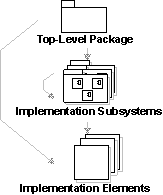
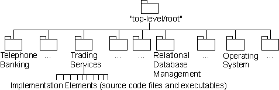

| Рекомендация: Модель реализации |
 |
|
| Связанные элементы |
|---|
ОбъяснениеВ среде программирования реализация состоит из элементов реализации, в частности, из организованных в каталоги файлов с исходным кодом, бинарных файлов и файлов с данными. В дополнение к этим элементам нижнего уровня часто возникает необходимость создать элементы управления верхнего уровня, которые группировали бы элементы реализации и другие подсистемы реализации. В первую очередь модель реализации формирует подсистемы реализации, включая зависимости и другие данные управления. Также она формирует ключевые элементы подсистемы реализации, например, развертываемые файлы или структуры каталогов.  Нотация в модели реализации. Стрелки показывают потенциальное владение. При необходимости можно создать пакет, служащий корневым узлом в модели реализации. Пакеты, включенные в стереотип <<подсистема реализации>>, группируют элементы реализации (файлы и каталоги) и другие подсистемы реализации. Пример:В банковской системе подсистемы реализации оформлены в виде широкой структуры с корневым узлом модели реализации. Другой способ организации подсистем в модели реализации - распределение их по уровням. (См. раздел Рекомендация по рабочему продукту: Импорт зависимости).  Модель реализации для банковской системы, иллюстрирующая иерархию владения. Модель реализации не только определяет основную структуру реализации (то есть иерархию подсистем реализации), но и может отражать импорт зависимостей между подсистемами реализации, компиляционные зависимости между элементами реализации, а также содержать диаграммы зависимостей между элементами модели реализации и модели проекта. Дополнительная информация приведена в следующих разделах:
ИспользованиеМодель реализации главным образом нацелена на формирование физической структуры программного обеспечения, то есть подсистем и элементов реализации. При необходимости можно создать одну модель, которая будет отвечать как за физическую реализацию, так и за логическую структуру. Этот подход часто применяется при обратном проектировании и заключается в синхронизации файлов с исходным кодом с совмещенной моделью реализации и проекта. Организация подсистем реализации может быть более или менее близка к модели проекта, в зависимости от способа преобразования между этими моделями. Это процессуальное решение, и оно должно быть описано в рекомендациях по проектированию, относящихся к проекту. Если преобразование полное, то есть каждая подсистема реализации является также подсистемой проекта, можно создать диаграммы для одной подсистеме проекта, отражающие аспекты как проектирования, так и реализации. Дополнительная информация о формировании структуры модели реализации и выполнении преобразования между моделью проекта и моделью реализации приведена в разделах Прием: Преобразование проектирования в код, Задача: Структурирование модели реализации и Рекомендация: Элемент реализации. |
© Copyright IBM Corp. 1987, 2006. Все права защищены.. |